Danger creates immersion
Observation, route choice, preparation, retreat, and failure all matter.
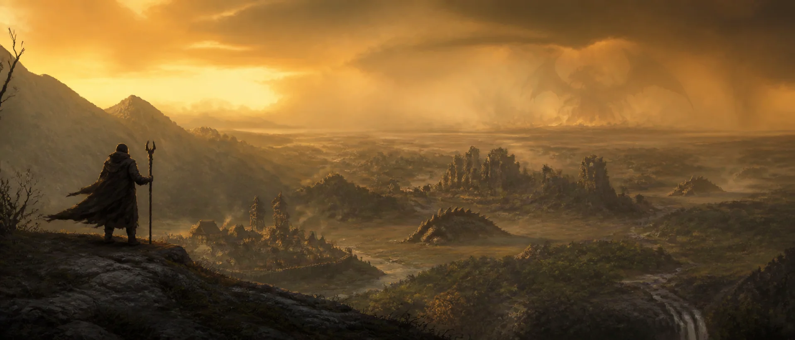
An original world in design & discovery
Not toward conquest. Toward succession. The wilderness grows hotter, older, and less hospitable—and it does not know you are the protagonist.
Cross the ward line01 The premise
This is not an invasion. The biosphere is reorganizing around apex reptilian life. Climate, territory, and food chains are slowly becoming theirs. The people living now are being edged out.
It has happened before. Ruins, dead cities, and deep places are the wreckage of the last ascendancy. Delvers go back into them for the one thing that might matter: knowledge of how someone survived the previous turn.
Provisional world premise. Geography, peoples, factions, cultures, and final terminology remain unresolved.
02 The frontier
Zones do not scale into convenience. The further a route carries you from warded ground, the more completely the succession has taken hold.
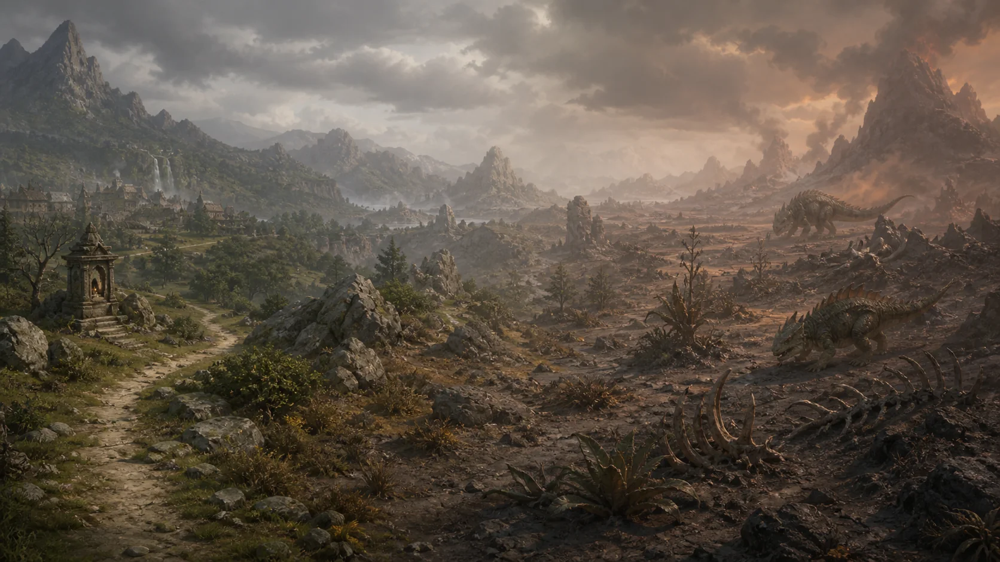
Observation, route choice, preparation, retreat, and failure all matter.
Each zone hides one fixed waypoint. You reach it before it can carry you.
Skill sharpens through use. The safer return is built from what you learned.
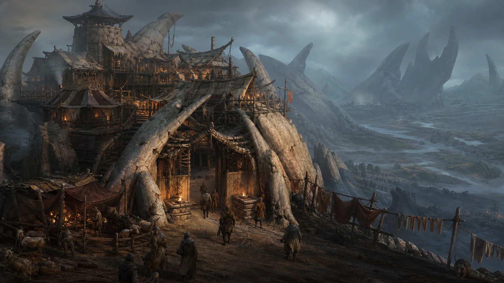
Inside the ward line
Markets open. Laundry dries. Grain prices start arguments. Ordinary life continues in the shelter of structures older than anyone remembers.
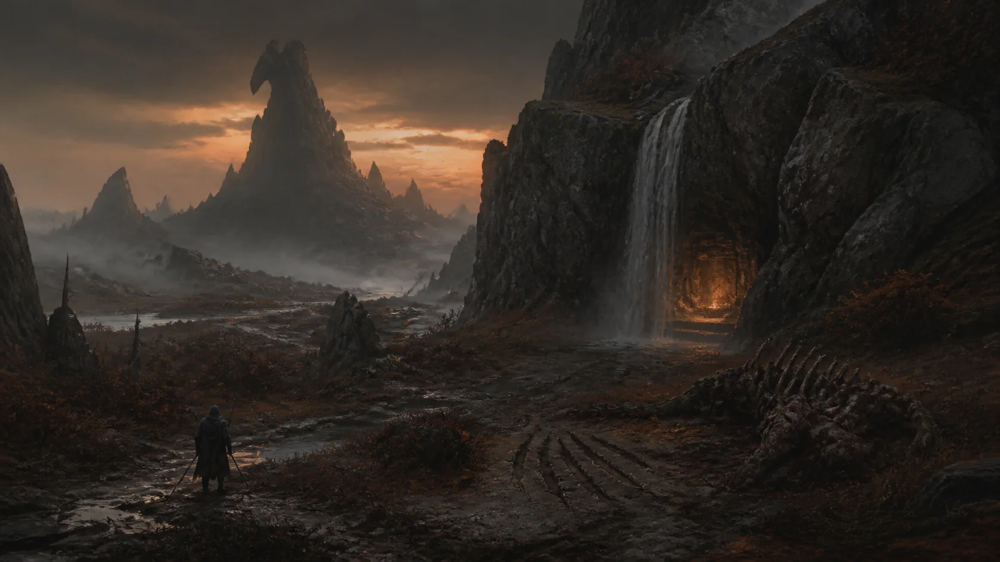
Beyond the ward line
Safe routes are remembered, not painted onto the world. A landmark can be worth more than a stronger blade.
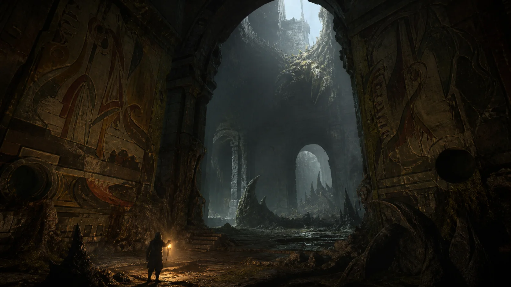
03 The last cycle
Delving is a frontier trade, not a destiny. Go into the wreckage. Read what remains. Carry enough of it back to make the next journey possible.
04 The ascending ecology
Dragonkin is a working descriptor for a family of apex fauna filling different niches. They have territory, dominance, instinct, and pack behavior— but no courts, no cities, and no plan.
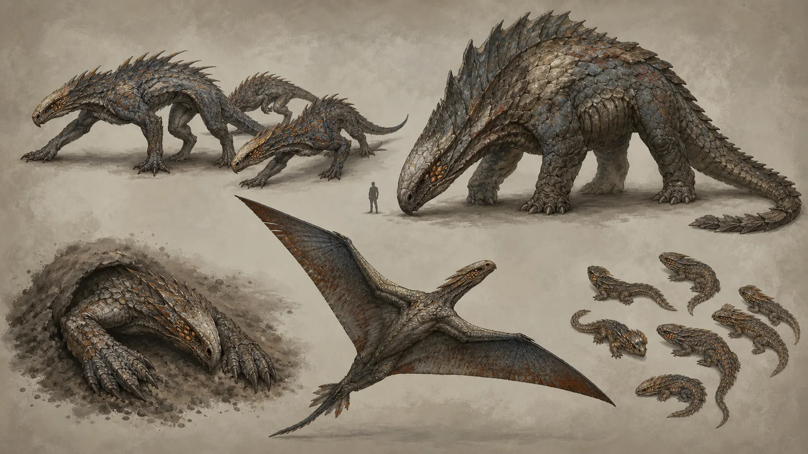
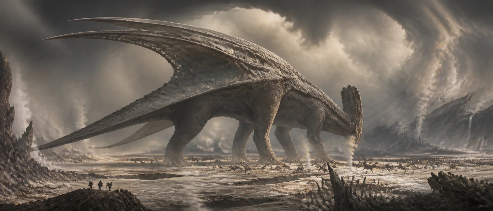
The keystone organism
“You may be able to kill this.
You cannot save the world from it.”
Its presence changes weather and land. Its horror is indifference. Defeating it ends one order and begins anarchy—not restoration.
05 The delvers
Classes are roles on the frontier: ways ordinary people survive the ruins and the wild. Every character combines one permanent primary with a stronger secondary and a lighter tertiary.
Holder, Reaver, Warder, Mender, Binder, and Kindler are working descriptors, not final names. The roster remains Exploring.
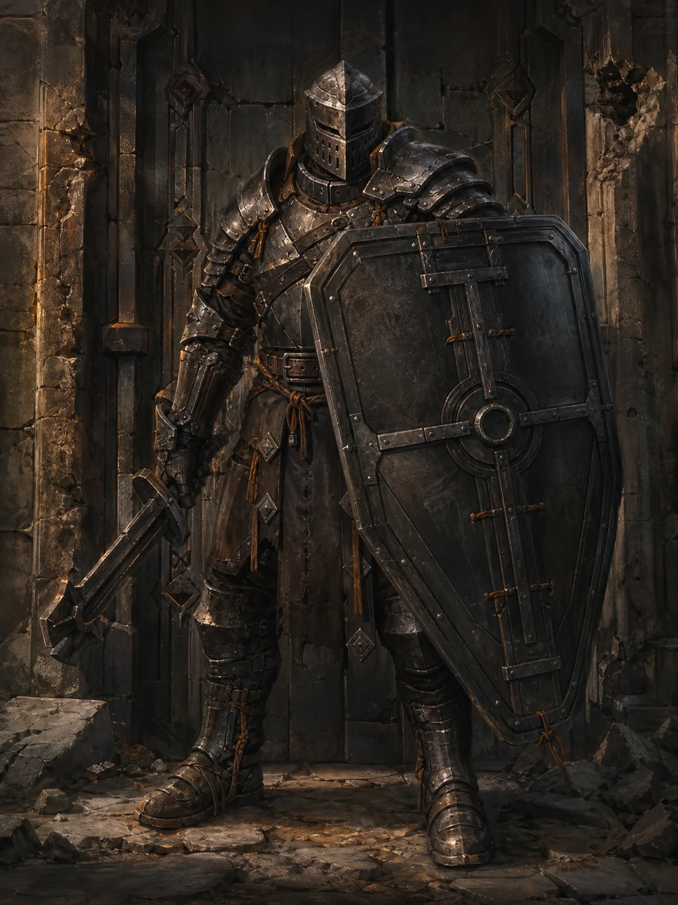
EnergyMitigation tank
Disciplined. Immovable. The door that will not open.
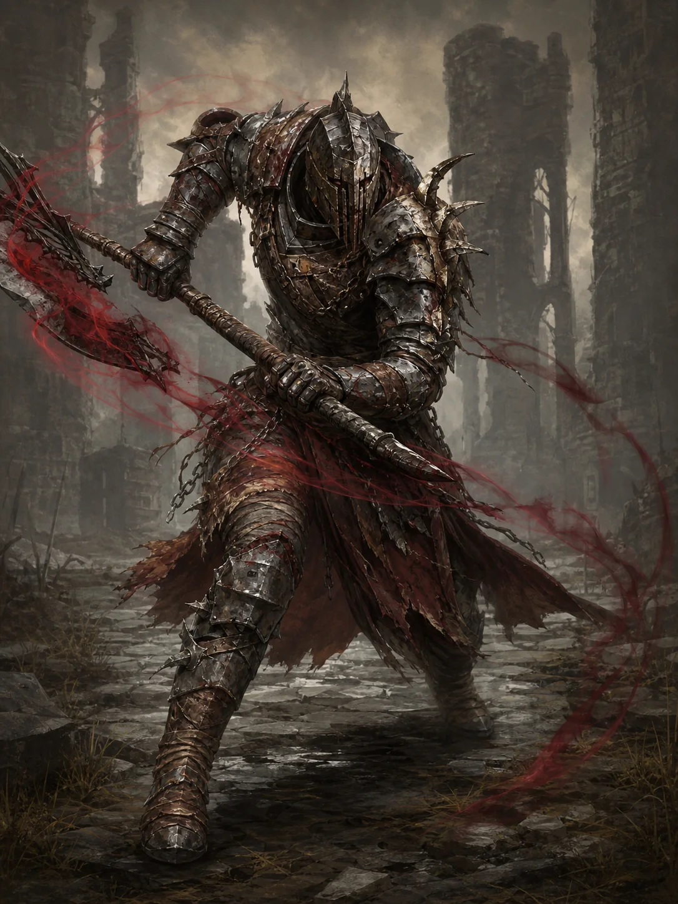
Energy + HPLifesteal tank
The wound that heals by dealing wounds.
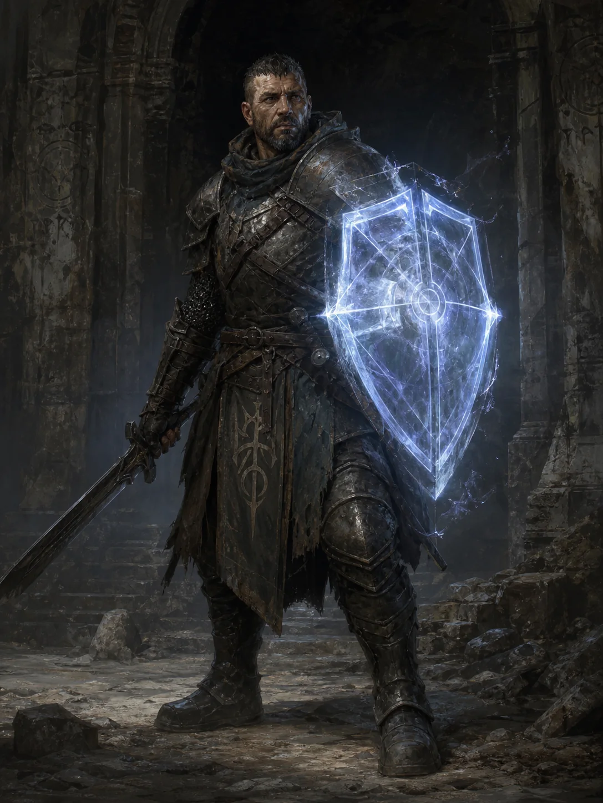
MPShield spell-tank
The light carried through the last dark.
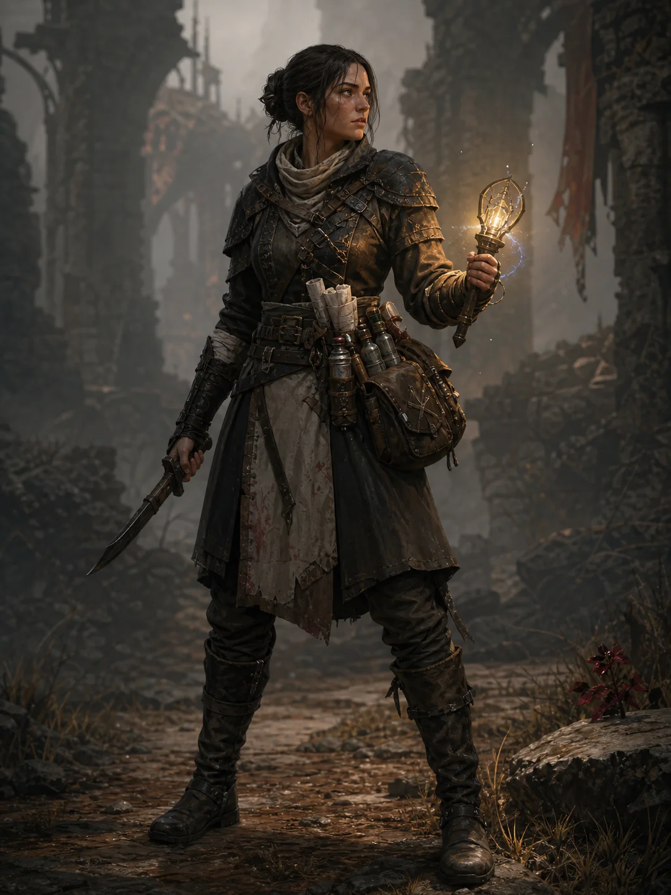
MPReactive healer
Steady, close to danger—the reason you walked back out.
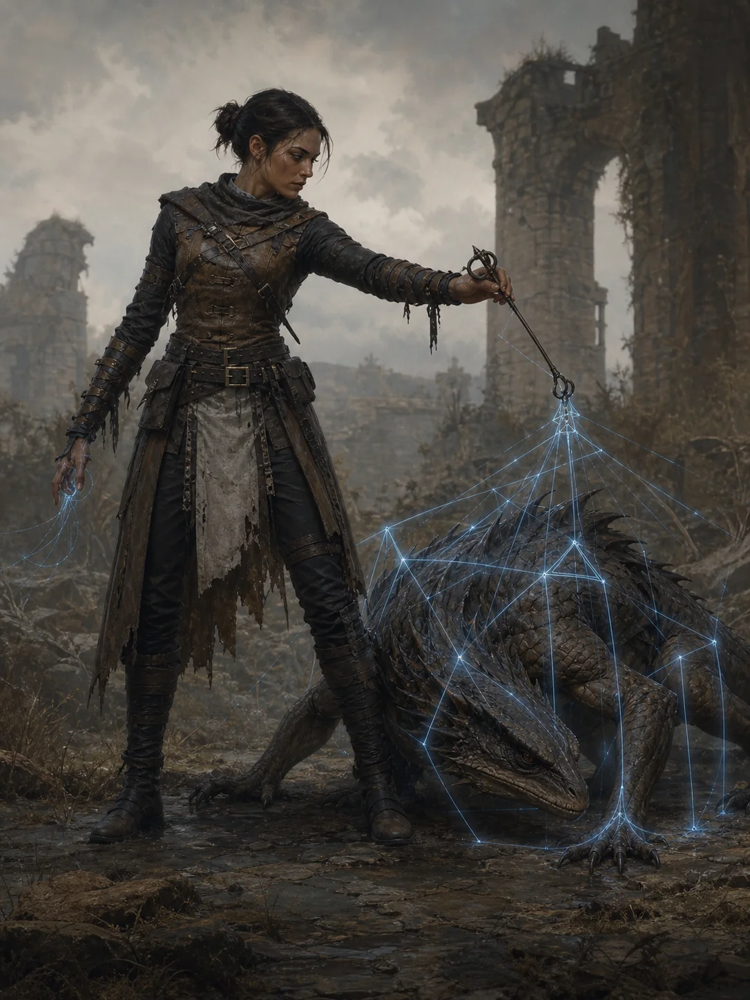
MPLockdown support
Creature-knowledge made precise. The stillness before it can move.
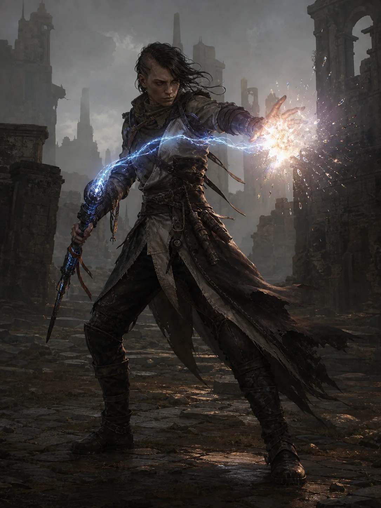
MPBurst striker
The last-cycle fire, briefly rekindled.
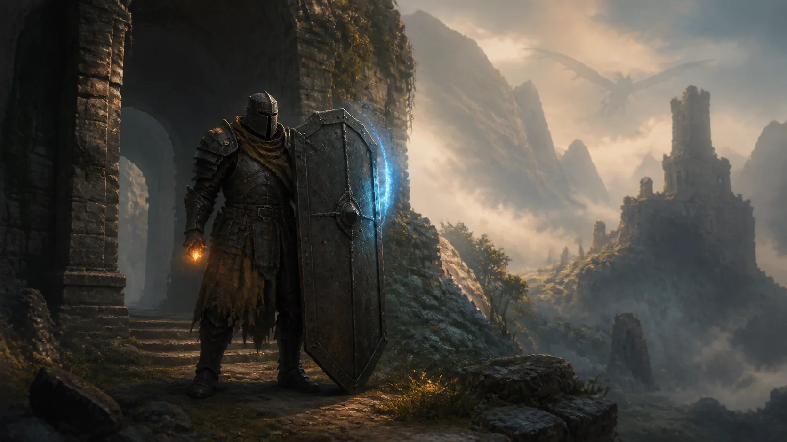
06 Character identity
Your primary is permanent and grants the complete kit. A stronger secondary fills a meaningful gap. A lighter tertiary adds one last edge. The silhouette— and the character's deepest power—always belongs to the primary.
07 Earned knowledge
The codex begins with rumor: a region, a creature, a fragment. As you encounter related foes, ruins, and evidence, uncertainty sharpens toward an exact source.
Routes, behaviors, safe places, dangerous times, and forgotten techniques are all progression. The next victory starts long before the next fight.
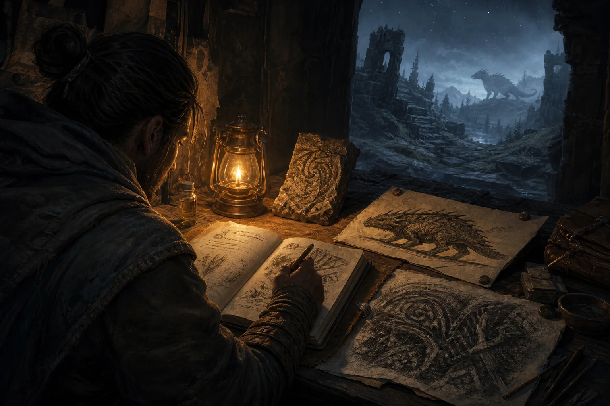
The intended loop
Solo-capable does not mean safe. Shared-world does not mean mandatory groups. Mastery is the difference between possible and earned.
Return to the ridge